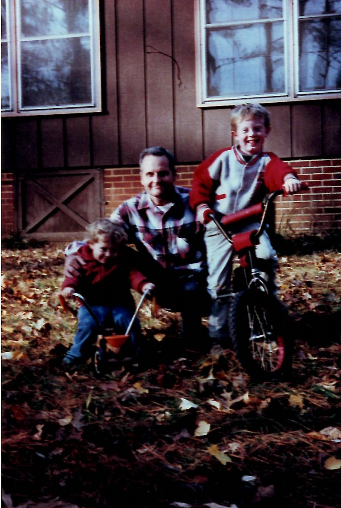
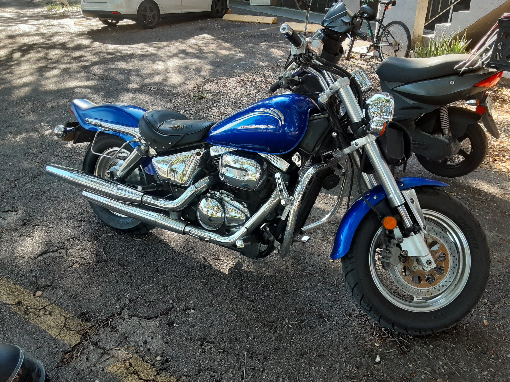

Born To Ride
I liked bicycles from an early age. The picture above is from when i was 8 years old. In 7th grade, for career day, I worked in a local bicycle shop.
Road bikes and Bicycle Commuting in Atlanta
 In high school and into me early adult years I forgot about
bicycles. After high school, I bought a car moved out on my own and
got a place in the city. I was living in the heart of Midtown
Atlanta in my early 20's when my car broke down and was not worth
fixing. I decided not to not buy another car and start taking the
bus to cut down on expenses. Taking the bus was not a fun. The worst
part about it was the time investment. You could end up spending 3
or 4 hours of your time traveling.
In high school and into me early adult years I forgot about
bicycles. After high school, I bought a car moved out on my own and
got a place in the city. I was living in the heart of Midtown
Atlanta in my early 20's when my car broke down and was not worth
fixing. I decided not to not buy another car and start taking the
bus to cut down on expenses. Taking the bus was not a fun. The worst
part about it was the time investment. You could end up spending 3
or 4 hours of your time traveling.
After doing the bus thing for some time, I came across a bicycle that was next to a dumpster; obviously thrown away by someone. It was an old huffy racing bike with sexy drop handlebars. It was a total piece of shit(every that huffy makes is). Despite that, due to the thinner rims and geometry of the frame, it was faster and more responsive than any bike I had been on previously. I fell in love with racing bikes that day. Soon after, I ditched the huffy and got a vintage Schwinn racing bike, and then got more vintage bikes and cleaned them up and fixed them. The bus was no more, I rode where I had to go. Not only did I fall in love with road bikes but I fell in love with bicycle commuting in urban settings.
My First Motorcycle
In 2010 I moved back to the suburbs of Atlanta, and still without a car, I was suddenly finding bicycling an inadequate form of transportation. I considered still getting a car, but after some thought I decided to two stay true to two-wheeled transportation and learn how to ride a motorcycle, and buy one. I settled on a 1998 Suzuki Savage, with 600 miles on it. I got it for $1000 dollars!!!! Over the next two years I put about 15,000 miles on it. During that time, I wrecked one time while was going too fast around a curve. I went off the road, fell off the bike, and broke my wrist. It was the first and only time I broke a bone, and it was some of the worst pain I'd felt in my life.


My Job at Performance Bicycle

I ended up selling my motorcycle and moving back to the city. For years I had been working in the service industry, and it was getting old, it had been old. Out of curiosity I looked online one day and found an ad for a bicycle shop hiring. I applied, was called in for an interview, and began work a week and a half later. Within three months I was the operations manager. My childhood dream of working at a bicycle shop was finally realized. I learned a lot at that job, about bicycles and about management and retail. It was stressful. I had a lot of responsibility. Overall it was a great experience in my life.
Getting Hit By a Car
While working at performance bicycle I was doing the bicycle commuting thing again. Every morning I rode 8 miles to work during rush hour. One day, on my way to work, I suddenly woke up in the back of an ambulance, not really sure how I got there. I was rear ended by a car, witnesses said it was a bad accident. Despite the seriousness of the accident, I managed to walk out of the emergency room 4 hours after arrival. I got a lawyer that week who specialized in bicycle accidents, and six months later received pretty nice settlement. I used that money to finance my move from Atlanta to Clearwater, where I live today.

My life In Florida
The best thing about Florida, besides the beaches, is that it's a great place to ride both motorcycles and bicycles. I'm considering finally getting a car again, but even if I do, my heart will be on two wheels till the day I die.